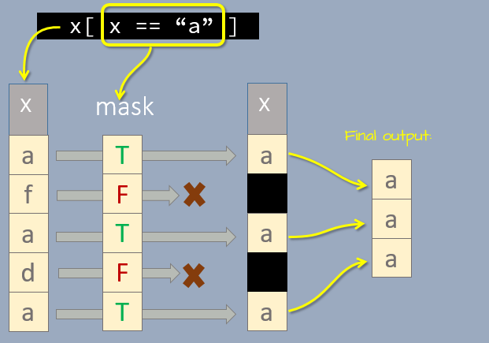
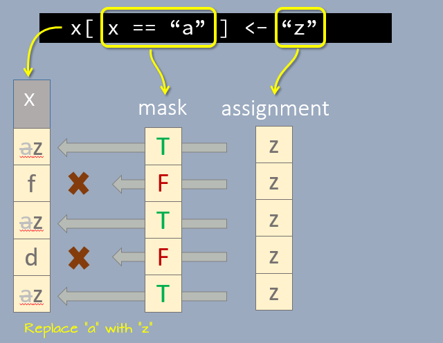

| version | |
|---|---|
| R | 4.5.2 |
8 Manipulating data tables using base functions
8.1 The subset function
You can subset a dataframe object by criteria using the subset function.
subset(mtcars, mpg > 25) mpg cyl disp hp drat wt qsec vs am gear carb
Fiat 128 32.4 4 78.7 66 4.08 2.200 19.47 1 1 4 1
Honda Civic 30.4 4 75.7 52 4.93 1.615 18.52 1 1 4 2
Toyota Corolla 33.9 4 71.1 65 4.22 1.835 19.90 1 1 4 1
Fiat X1-9 27.3 4 79.0 66 4.08 1.935 18.90 1 1 4 1
Porsche 914-2 26.0 4 120.3 91 4.43 2.140 16.70 0 1 5 2
Lotus Europa 30.4 4 95.1 113 3.77 1.513 16.90 1 1 5 2You can combine individual criterion using boolean operators when selecting by row.
subset(mtcars, (mpg > 25) & (hp > 65) ) mpg cyl disp hp drat wt qsec vs am gear carb
Fiat 128 32.4 4 78.7 66 4.08 2.200 19.47 1 1 4 1
Fiat X1-9 27.3 4 79.0 66 4.08 1.935 18.90 1 1 4 1
Porsche 914-2 26.0 4 120.3 91 4.43 2.140 16.70 0 1 5 2
Lotus Europa 30.4 4 95.1 113 3.77 1.513 16.90 1 1 5 2You can also subset by column. To select columns, add the select = argument.
subset(mtcars, (mpg > 25) & (hp > 65) , select = c(mpg, cyl, hp)) mpg cyl hp
Fiat 128 32.4 4 66
Fiat X1-9 27.3 4 66
Porsche 914-2 26.0 4 91
Lotus Europa 30.4 4 113Note that the subset function can behave in unexpected ways. This is why its authors recommend against using subset in a script (see ?subset). Instead, they advocate using indices shown next.
8.2 Subset using indices
You’ve already learned how to identify elements in an atomic vector or a data frame in Chapter 3. For example, to extract the second and fourth element of the following vector,
x <- c("a", "f", "a", "d", "a")type,
x[c(2, 4)][1] "f" "d"To subset a dataframe by index, you need to define both dimension’s index (separated by a comma). For example, to extract the second row an fourth column type:
mtcars[2,4 ][1] 110This returns the intersection of the row and column–a single cell.
You can, of course, extract table blocks by using c() operators and/or the colon operator.
mtcars[5:12, c("hp", "mpg", "am")] hp mpg am
Hornet Sportabout 175 18.7 0
Valiant 105 18.1 0
Duster 360 245 14.3 0
Merc 240D 62 24.4 0
Merc 230 95 22.8 0
Merc 280 123 19.2 0
Merc 280C 123 17.8 0
Merc 450SE 180 16.4 0Note that here, we chose to reference the columns by their names instead of their index number.
8.3 Extracting using logical expression and indices
We can also extract cells based on conditions. For example, to extract all elements in x that are equal to "a", type:
x[ x == "a" ][1] "a" "a" "a"Let’s breakdown the above expression. The output of the expression x == "a" is TRUE FALSE TRUE FALSE TRUE, a logical vector with the same number of elements as x. The logical elements are then passed to the indexing brackets where they act as a “mask” as shown in the following graphic.

The elements that make it through the extraction mask are then combined into a new vector element to reveal those elements satisfying the query.
The same idea applies to dataframes. For example, to extract all rows in mtcars where mpg > 30 type:
mtcars[ mtcars$mpg > 30, ] mpg cyl disp hp drat wt qsec vs am gear carb
Fiat 128 32.4 4 78.7 66 4.08 2.200 19.47 1 1 4 1
Honda Civic 30.4 4 75.7 52 4.93 1.615 18.52 1 1 4 2
Toyota Corolla 33.9 4 71.1 65 4.22 1.835 19.90 1 1 4 1
Lotus Europa 30.4 4 95.1 113 3.77 1.513 16.90 1 1 5 2Here, we are “masking” the rows that do not satisfy the criterion using the TRUE/FALSE logical outcomes from the conditional operation. Note that we have to add mtcars$ to the expression since the variable mpg does not exist as a standalone object.
The expression can be made more complex. For example, to select all rows where mpg is greater than 30 and where carb is equal to 2, and limiting the columns to hp, mpg and disp, type:
mtcars[ (mtcars$mpg > 30) & (mtcars$carb == 2), c("hp", "mpg", "disp")] hp mpg disp
Honda Civic 52 30.4 75.7
Lotus Europa 113 30.4 95.18.4 Replacing values using logical expressions
We can adopt the same masking properties of logical variables to replace values in a vector. For example, to replace all instances of "a" in vector x with the character "z", we first expose the elements equal to "a", then assign the new value to the exposed elements.
x[ x == "a" ] <- "z"
x[1] "z" "f" "z" "d" "z"You can think of the logical mask as a template applied to a road surface before spraying that template with a can of "z" spray. Only the exposed portion of the street surface will be sprayed with the "z" values.

You can apply this technique to dataframes as well. For example, to replace all elements in mpg with -1 if mpg < 25, type:
mtcars2 <- mtcars
mtcars2[ mtcars2$mpg < 25, "mpg"] <- -1
mtcars2 mpg cyl disp hp drat wt qsec vs am gear carb
Mazda RX4 -1.0 6 160.0 110 3.90 2.620 16.46 0 1 4 4
Mazda RX4 Wag -1.0 6 160.0 110 3.90 2.875 17.02 0 1 4 4
Datsun 710 -1.0 4 108.0 93 3.85 2.320 18.61 1 1 4 1
Hornet 4 Drive -1.0 6 258.0 110 3.08 3.215 19.44 1 0 3 1
Hornet Sportabout -1.0 8 360.0 175 3.15 3.440 17.02 0 0 3 2
Valiant -1.0 6 225.0 105 2.76 3.460 20.22 1 0 3 1
Duster 360 -1.0 8 360.0 245 3.21 3.570 15.84 0 0 3 4
Merc 240D -1.0 4 146.7 62 3.69 3.190 20.00 1 0 4 2
Merc 230 -1.0 4 140.8 95 3.92 3.150 22.90 1 0 4 2
Merc 280 -1.0 6 167.6 123 3.92 3.440 18.30 1 0 4 4
Merc 280C -1.0 6 167.6 123 3.92 3.440 18.90 1 0 4 4
Merc 450SE -1.0 8 275.8 180 3.07 4.070 17.40 0 0 3 3
Merc 450SL -1.0 8 275.8 180 3.07 3.730 17.60 0 0 3 3
Merc 450SLC -1.0 8 275.8 180 3.07 3.780 18.00 0 0 3 3
Cadillac Fleetwood -1.0 8 472.0 205 2.93 5.250 17.98 0 0 3 4
Lincoln Continental -1.0 8 460.0 215 3.00 5.424 17.82 0 0 3 4
Chrysler Imperial -1.0 8 440.0 230 3.23 5.345 17.42 0 0 3 4
Fiat 128 32.4 4 78.7 66 4.08 2.200 19.47 1 1 4 1
Honda Civic 30.4 4 75.7 52 4.93 1.615 18.52 1 1 4 2
Toyota Corolla 33.9 4 71.1 65 4.22 1.835 19.90 1 1 4 1
Toyota Corona -1.0 4 120.1 97 3.70 2.465 20.01 1 0 3 1
Dodge Challenger -1.0 8 318.0 150 2.76 3.520 16.87 0 0 3 2
AMC Javelin -1.0 8 304.0 150 3.15 3.435 17.30 0 0 3 2
Camaro Z28 -1.0 8 350.0 245 3.73 3.840 15.41 0 0 3 4
Pontiac Firebird -1.0 8 400.0 175 3.08 3.845 17.05 0 0 3 2
Fiat X1-9 27.3 4 79.0 66 4.08 1.935 18.90 1 1 4 1
Porsche 914-2 26.0 4 120.3 91 4.43 2.140 16.70 0 1 5 2
Lotus Europa 30.4 4 95.1 113 3.77 1.513 16.90 1 1 5 2
Ford Pantera L -1.0 8 351.0 264 4.22 3.170 14.50 0 1 5 4
Ferrari Dino -1.0 6 145.0 175 3.62 2.770 15.50 0 1 5 6
Maserati Bora -1.0 8 301.0 335 3.54 3.570 14.60 0 1 5 8
Volvo 142E -1.0 4 121.0 109 4.11 2.780 18.60 1 1 4 2Note that we had to specify the column, mpg, into which we are replacing the values. Had we left the second index empty, we would have replaced values across all columns for records having an mpg value less than 30.